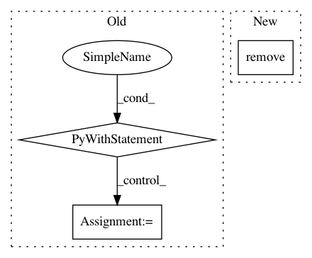

fce6ae4fafe9b1e5a2b7f3287813ca76e4c92d33,tests/test_config/test_config_files.py,,test_load_config_file,#Any#Any#,29
Before Change
@pytest.mark.parametrize("ext, handler", HANDLER_BY_EXT.items())
def test_load_config_file(ext, handler):
with tempfile.NamedTemporaryFile("w+" + handler.mode, suffix=ext) as f:
handler.dump(data, f)
f.seek(0)
d = load_config_file(f.name)
assert d == data
After Change
f.close()
d = load_config_file(f_name)
assert d == data
os.remove(f_name)
In pattern: SUPERPATTERN
Frequency: 3
Non-data size: 3
Instances
Project Name: IDSIA/sacred
Commit Name: fce6ae4fafe9b1e5a2b7f3287813ca76e4c92d33
Time: 2015-06-23
Author: qwlouse@gmail.com
File Name: tests/test_config/test_config_files.py
Class Name:
Method Name: test_load_config_file
Project Name: aws/sagemaker-python-sdk
Commit Name: 3d091b43f5c817709299d6cdfb95d4b72b356ca4
Time: 2018-11-02
Author: nacho950@gmail.com
File Name: src/sagemaker/fw_utils.py
Class Name:
Method Name: tar_and_upload_dir
Project Name: tensorflow/datasets
Commit Name: 7744eb8203094be51b8708c74506be8a91554a02
Time: 2020-03-18
Author: thealmightylion.madhav@gmail.com
File Name: tensorflow_datasets/scripts/replace_fake_images.py
Class Name:
Method Name: rewrite_tar